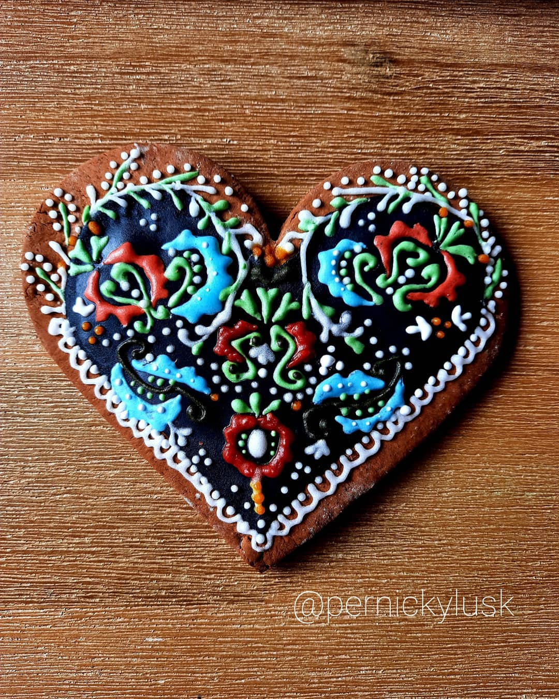

Medovníčky podľa @pernickylusk — Normy Jedál
Tradiční české medové🍯🍯🍯 perníkové srdíčko s "chodskou tématikou "
Bezlepku, bezlaktozy🍪🍪
These gingerbreads are famous for design known as "Chodský styl".Design is typical for Czech republic and Slovakia.
#instagood#tradice#traditional#medovnicky #czechrepublic#glutenfreefood#laktozefree#bezlaktozy#bezlepku#gingerbreads #cookies#cakes #food #sweet#handemadewithlove#handemade#rucniprace#rucnivyroba#tvorba#darecek#praha#pernicky#perníčky#perniky#brno#present#decoratedcookies#ceskerucicky #remeslo#slovensko